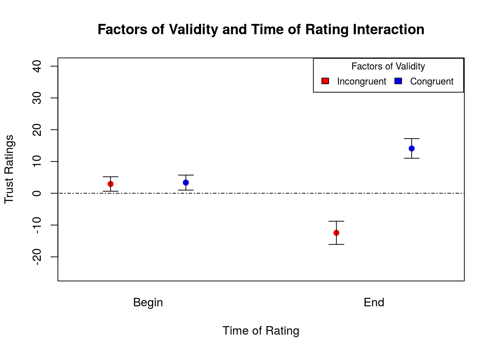

A 2 X 2 X 2 (IV: factors of validity, face gender, and time of rating) within subjects ANOVA was conducted to analyze the trust ratings. The levels of the factors of validity was congruent and incongruent, referring to whether the pictured face gazed toward or away from the object respectively. The levels of the face gender of the individuals was female and male. Lastly, the levels of the time of rating are before and after the gaze-cueing phase.
ANOVA analysis shows that there was a significant main effect for factors of validity with F (1,49) = 11.12, MS Error = 1639, p < 0.00164 for the incongruent (M = -12.45, SE = 3.65) and congruent (M = 14.11, SE = 3.09) gaze-cues at the final time of rating, suggesting that a systematic influence played a noticeable role in affecting trust ratings in congruent and incongruent conditions. In contrast, at the initial time of rating, the ratings for the incongruent and congruent gaze-cues were M = 2.93, SE = 2.27 and M = 3.36, SE = 2.35, respectively. A t-test comparison of the two levels of the factors of validity at the initial time of rating show a statistically insignificant t(198) = 0.13, p < 0.894, suggesting that the incongruent and congruent faces were rated similarly at the start of the experiment. The notable change in rating at the different times is also evident in the interaction between factors of validity and time of rating with F (1,49) = 12.89, MS Error = 1323, p < 0.000761, further corroborating that the trust ratings were influenced by when the test was conducted. This contrast between the statistically insignificant difference in ratings at the start of the experiment and the significant difference in ratings at the end of the rating suggests that the experimental manipulation, rather than chance, was responsible for such changes.

There was a significant interaction between face gender and time of rating with F (1,49) = 7.35, MS Error = 291.6, p < 0.00921, suggesting that the trust ratings of both genders were changed asymmetrically following the gaze-cueing phase. Although females were initially perceived as more trustworthy than males, the trustworthiness of females and males were similar at the final time of rating. A paired sample t-test was conducted between the female (M = 7.59, SEM = 2.22) and male group (M = -1.30, SEM = 2.32) in the initial time of rating with t (198) = 2.76, p < 0.006231, suggesting an initial significant difference in trust ratings between the two groups. By contrast, another paired sample t-test was conducted between the female (M = 0.64, SEM = 3.35) and male (M = 1.02, SEM = 3.90) group in the final time of rating with t (198) = -0.073, p < 0.9416, suggesting a final similarity in the trust rating between female and male ratings. According to these results, females that convey an incongruent gaze-cue lost more trust rating points than their male counterparts. Additionally, females that convey a congruent gaze-cue gained fewer trust rating points than their male counterparts. These implications are particularly notable considering the fact that females were perceived to be more trustworthy that males at initial time of rating.
To further determine the role of the timing of rating on the main effects and interactions, two separate 2 X 2 (IV: factors of validity and face gender) within-subjects ANOVAs were conducted with the first ANOVA and second ANOVA corresponding to the initial and final time of rating, respectively. At the initial time of rating, there was an insignificant main effect of factors of validity with F (1,49) = 0.029, MS Error = 329.5, p < 0.865 but a significant main effect of face gender F (1,49) = 8.46, MS Error = 466, p < 0.00545. There was no interaction between factors of validity and face gender at the initial time of rating with F (1,49) = 0.493, MS Error = 216.9, p < 0.486. These results suggest that the participants based trust ratings on the gender of the face with females (M = 7.59, SEM = 2.22) rated as more trustworthy than males (M = -1.30, SEM = 2.32). An insignificant main effect for the factors of validity for incongruent (M = 2.93, SE = 2.27) and congruent (M = 3.36, SE = 2.35) gaze-cues serves to legitimize the experimental method since the participants were unaware of the congruent and incongruent faces before the start of the experiment. At the final time of rating, there was a significant main effect of factors of validity with F (1,49) = 13.4, MS Error = 2632, p < 0.000616 but an insignificant main effect of gender with F (1,49) = 0.012, MS Error = 598.9, p < 0.914. There was no interaction between factors of validity and face gender at the final time of rating with F (1,49) = 0.071, MS Error = 466.3, p < 0.791. These results suggest that participants based trust ratings on factors of validity rather than face gender at the end of the experiment. In short, the experiment and subsequent statistical analysis contrasted the baseline measurement, in which trust rating was initially based on face gender, with the experimental measurement, in which trust rating was finally based on factors of validity, in order to determine the change that occurred as a result of the experimental manipulation.
Luis et al. published the raw data tables to the open science framework where it was accessed for statistical analysis. Although most of the numbers reported in the paper accord with the numbers presented above, there is one minor discrepancy in the standard error of the mean calculations. In the above analysis, the calculation of the standard error of the mean was calculated by taking the ratio of the sample standard deviation and the square root of the sample size. It is possible that Luis et al. used a different method to obtain the reported standard error of the mean. Nevertheless, the reported numbers are not too different from those presented in the paper. All the remaining numbers accord with those presented in the paper.